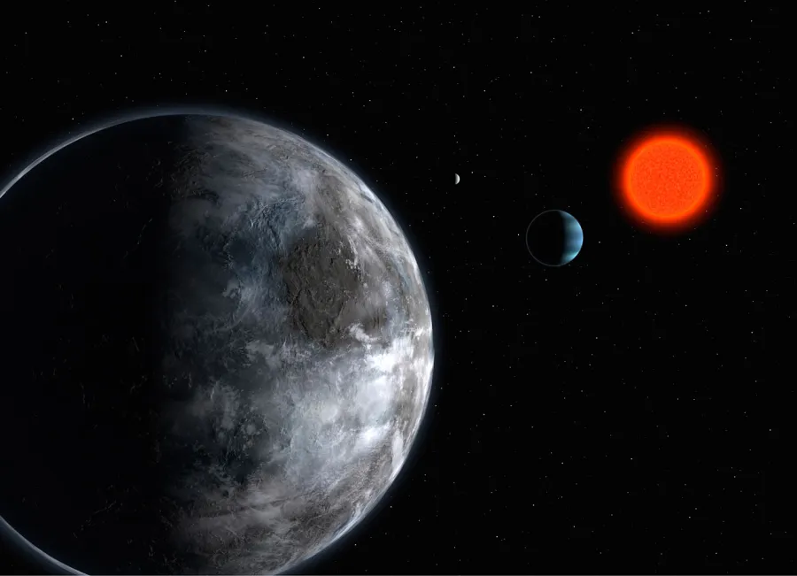

25. April 2007
Gliese 581 c: Supererde in der habitablen Zone gemeldet
Ein Team meldete mit dem Spektrografen HARPS der ESO einen Planeten von etwa fünf Erdmassen beim Roten Zwerg Gliese 581, der 20,5 Lichtjahre entfernt ist. Gliese 581 c umrundet den Stern in 13 Tagen und war der bis dahin kleinste bekannte Exoplanet.
Nach der damaligen Abschätzung lag die mittlere Temperatur zwischen 0 und 40 Grad Celsius; Wasser könnte demnach flüssig sein. Die ESO sprach vom ersten erdähnlichen Planeten in einer habitablen Zone. Der Radius wurde nicht gemessen, sondern aus Modellen auf das 1,5-Fache des Erdradius geschätzt. Zudem gab es deutliche Hinweise auf einen dritten Planeten mit etwa acht Erdmassen.
Quelle: ESO: "Astronomers Find First Earth-like Planet in Habitable Zone." (eso0722), 25.04.2007